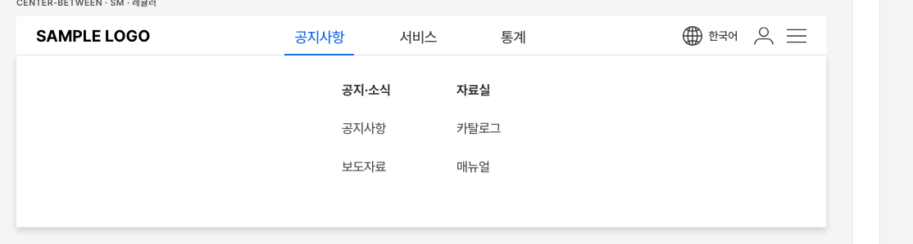
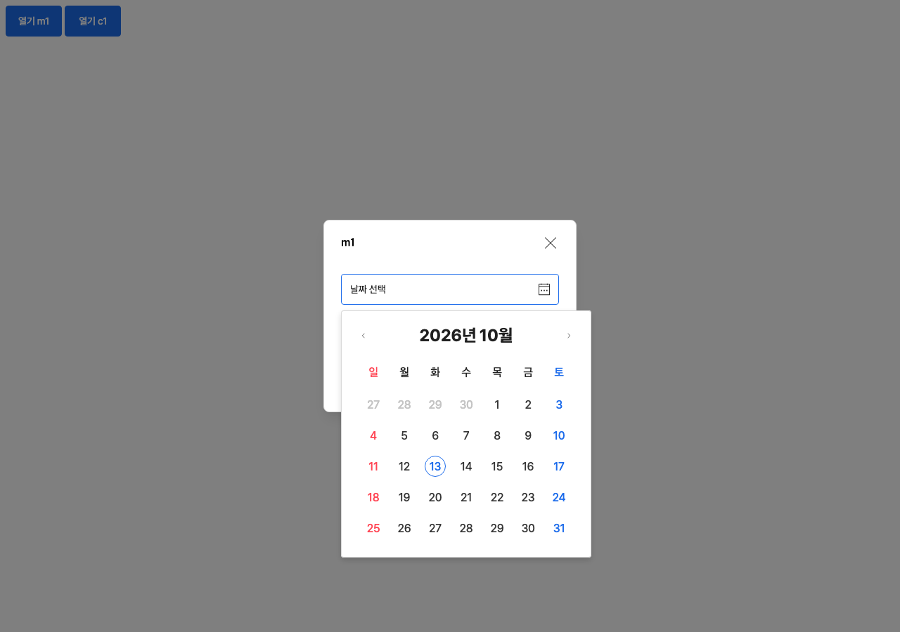

웹판 수정 결과와 결정할 것
2026-10-13 · 배포본 0.20.0 · 직전 성적표 → scorecard.html
고친 것
| 무엇 | 지금 |
|---|---|
| 규칙 검사 도구가 안 돎 | 웹 묶음만 받아도 돌아갑니다. 이름표(aria-label) 빠진 스위치도 잡습니다 |
| 미리보기 더블클릭 시 아이콘 빈 칸 | 더블클릭으로 열어도 아이콘·동작이 다 보입니다 |
| 모달 안 달력에서 Esc → 모달까지 닫힘 | Esc 한 번에 맨 위 한 겹만 닫힙니다 |
| 모달 안에서 달력이 520px로 커짐 | 모달 스타일이 안쪽 부품에 새어 들어가던 버그였습니다. 이제 정본 크기(356 / 작은 달력 267)로 열립니다. 시간·셀렉트·필터칩 팝업도 같이 바로잡았습니다 |
| 페이지 번호 5쪽 넘으면 안 따라옴 | 쪽이 넘어가면 번호 줄이 다시 그려지고 현재 쪽 표시가 유지됩니다 |
| 모달·바텀시트 여는 법 없음 | 버튼에 속성 한 줄로 엽니다. 취소·확인·닫기는 기본으로 닫힙니다 |
| 값 미리 채우기·폼 전송 | 셀렉트·달력에 값 넣기/읽기와 폼 전송용 이름표가 생겼습니다. 시간 선택은 값 읽기만 됩니다 |
| GNB 하위메뉴가 본문을 밀어냄 | 본문 위에 겹쳐 뜹니다(river 결정). 안내 사이트 화면도 맞췄습니다 |
| 설명서 5줄 | 스크립트 넣는 법·글꼴·다크 모드·바탕 스타일·여닫기·값·모바일까지 담았습니다. 부품 32종마다 설명 한 장씩 생겼습니다 |
| 숫자 엇갈림·파일 이름·내부 메모 | 숫자는 자동 계산, 모바일 파일 이름 통일, 내부 메모(사람 이름 125곳) 제거 |
| 글꼴을 안 정하던 부품 5종 | Pretendard로 고정 |
수정 중에 앱판(React Native·안드로이드)의 작은 장식이 빠지는 문제, 바텀시트 기본값이 바뀌는 문제가 새로 생겼습니다. 둘 다 바로잡았고, 다음에도 기계가 잡도록 검사를 붙였습니다. 로그인 화면은 패턴 쪽 통합화면을 쓰도록 기억해 두었습니다.


① '종류'를 고르는 속성 이름 — 7가지
웹 마크업에서 "이 부품을 어떤 모양으로 쓸지" 고르는 속성 이름이 부품마다 다릅니다.
| 속성 이름 | 쓰는 부품 | 무엇을 고르나 |
|---|---|---|
data-variant | 버튼, 텍스트 버튼, 칩, 필터칩, LNB, GNB, 모바일 헤더 (7) | 겉모양의 위계 — 채움·테두리, 제목·닫기 구성 |
data-type | 드롭다운, 바텀시트 옵션, 리스트 행 (+ GNB 하위메뉴, 시간 선택) | 줄 안에 무엇이 들었나 — 글자만, 체크박스, 스위치… / 12시간·24시간 |
data-footer | 모달, 내용 모달, 바텀시트 | 아래 버튼 개수 — 없음·1개·2개 |
data-mode | 달력 | 날짜 하나 / 기간 |
data-tone | 데이터 태그 | 색 — 파랑·빨강 |
data-axis | 구분선 | 방향 — 가로·세로 |
data-icon | 모바일 하단 탭 | 지금 켜진 탭 |
알아둘 사실 세 가지
- Figma 정본부터 이름이 섞여 있습니다. Variant·Type·Footer·Axis·Mode가 섞여 있고, 웹은 이것을 거의 그대로 옮겼습니다.
- 이름은 달라도 뜻도 다릅니다. 버튼 개수, 선 방향, 날짜 하나/기간을 모두 '종류'로 묶으면 오히려 뜻이 흐려집니다.
- React·Vue는 이미 하나로 통일돼 있습니다. 모두
variant하나로 받고 안에서 번역합니다. 헷갈림은 HTML을 직접 쓰는 퍼블리셔에게만 남아 있습니다.
| 선택지 | 장점 | 대가 |
|---|---|---|
| A. 그대로 두고 표 한 장으로 안내추천 | Figma와 이름이 맞고, 이름에 뜻이 남습니다. 기존 화면에 손댈 것이 없습니다 | 퍼블리셔가 부품마다 이름을 확인해야 합니다. 대신 부품 설명서와 규칙 검사 도구가 틀린 이름을 바로 알려줍니다 |
B. 겉모양 위계만 data-variant로 통일 | 데이터 태그 색, 드롭다운·리스트 행 형태처럼 진짜 '종류'인 것만 모읍니다 | Figma 이름과 어긋납니다. 옛 이름도 한동안 함께 받아야 합니다 |
C. 전부 data-variant로 통일 | 외울 이름이 하나뿐입니다 | 버튼 개수·방향처럼 뜻이 다른 것까지 섞입니다. 이미 쓰는 화면을 모두 고쳐야 합니다 |
② 달력 — 크기·연도 표기·열릴 때 초점
크기 해결됨
퍼블리셔가 본 520px 달력은 디자인 값이 아니라 버그였습니다. 모달 스타일이 안에 든 달력까지 덮어쓰고 있었습니다. 이제 어디서 열든 정본 크기로 열립니다.
| 달력 판 크기 | 칸 크기 | 언제 | |
|---|---|---|---|
| 보통(MD) | 356 × 352 | 44 × 44, 글자 16 | 입력칸이 보통 크기일 때 |
| 작은(SM) | 267 × 266 | 33 × 33, 글자 12 | 입력칸이 작은 크기(xsm·xxsm)일 때 자동 (river 2026-09-04) |
| 모바일 | 아래에서 올라오는 시트로 엽니다 | ||
입력칸(140px)보다 달력이 넓은 건 정상입니다. 달력은 화면 위에 떠서 열리고, 아래 공간이 모자라면 위로 뒤집혀 열립니다. 모달 밖으로 조금 나가도 가리지 않고 위에 뜹니다.
연도 표기 '26.10.15' river 결정된 사항
2026-09-08에 river님이 4자리로 바꿨다가 같은 날 "2자리 유지"로 되돌린 기록이 있습니다. 화면에만 2자리로 보이고, 서버로 보내는 값은 2026-10-15 네 자리입니다. 그대로 두려고 하는데, 생각이 바뀌셨으면 말씀해 주세요.
열릴 때 초점이 지난달 27일로 감 결정 필요
키보드로 달력을 열면 칸 안에 깜빡이는 표시가 갑니다. 지금은 격자의 첫 칸으로 가서, 지난달 날짜에 먼저 닿습니다. 이미 날짜를 골라 둔 상태에서도 그 날짜가 아니라 첫 칸으로 갑니다. 정본에 정해진 규칙이 없어서 제가 임의로 정하지 않았습니다.
| 선택지 | 열었을 때 초점 |
|---|---|
| A. 고른 날짜 → 없으면 오늘추천 | 웹 접근성 표준 달력과 같은 방식입니다. 키보드 사용자가 바로 이어서 고를 수 있습니다 |
| B. 지금처럼 첫 칸 | 바꾸지 않습니다 |
③ 그 밖에 정해야 할 것 (작은 것)
| 무엇 | 지금 | 선택지 |
|---|---|---|
| 바텀시트 안 옵션 고르기·칩 하나만 켜기·하단 탭 이동을 부품이 알아서 할지 | 정본에 "선택은 화면이 정한다"고 되어 있어 손대지 않았습니다. 퍼블리셔가 직접 짭니다 | A. 부품이 알아서 (정본에 동작 추가) / B. 지금처럼 화면이 정함 |
| 페이지 번호의 '이전·다음' | 한 쪽씩 이동합니다. 정본 설명은 "이전·다음 묶음 이동"(번호 줄 한 묶음씩)입니다 | A. 묶음 이동으로 맞춤 / B. 한 쪽 이동 유지하고 설명을 고침 |
| 모달 위에 모달 겹쳐 열기 | 정본에서 지원하지 않습니다. 겹쳐 열었을 때 페이지가 멈추던 문제만 막았습니다 | 지금처럼 지원하지 않음으로 둡니다 |
아직 못 믿는 부분
React는 실제 React를 깔아 돌리지 않고, 똑같이 동작하는 대역으로 시험했습니다. React Native는 코드를 따라 읽는 데까지만 확인했습니다. 글꼴이 없는 컴퓨터에서 어떻게 보이는지는 이 맥에 Pretendard가 깔려 있어 직접 보지 못했습니다.